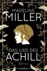

"Ein Zimmer ohne Bücher ist wie ein Körper ohne Seele."
THE BOOKLOVER

Meine Bücher der Woche
Das Lied des Achill - Madeline Miller

Aus dem Amerikanischen von Michael Windgassen. Achill, Sohn der Meeresgöttin Thetis und des König Peleus, ist stark, anmutig und schön - niemand, dem er begegnet, kann seinem Zauber widerstehen. Patroklos ist ein unbeholfener junger Prinz, der nach einem schockierenden Akt der Gewalt aus seinem Heimatland verbannt wurde. Ein Zufall führt die beiden schon als Kinder zusammen, und je mehr Zeit sie gemeinsam verbringen, desto enger wird das Band zwischen ihnen. Nach ihrer Ausbildung in der Kriegs- und Heilkunst durch den Zentauren Chiron erfahren sie vom Raub der Helena. Alle Helden Griechenlands sind aufgerufen, gegen die Spartaner in den Kampf zu ziehen, um die griechische Königin zurückzuerobern. Mit dem einzigen Ziel, ein ruhmreicher Krieger zu werden, zieht Achill in den Kampf um Troja. Getrieben aus Sorge um seinen Freund, weicht Patroklos ihm nicht von der Seite. Noch ahnen beide nicht, dass das Schicksal ihre Liebe herausfordern und ihnen ein schreckliches Opfer abverlangen wird.
Das ungeschminkte Leben - Maryse Conde
Aus dem Französischen von Beate Thill. "Ich blickte hinauf zum sternenübersäten Himmel und wünschte mir leidenschaftlich ein neues Leben." Maryse Condé wird als jüngstes von acht Kindern auf der französischen Karibikinsel Guadeloupe geboren und gilt heute als "Weltbürgerin und Grande Dame der frankophonen Literatur" (BR2). In ihrer Autobiografie lässt sie ihre frühen Lebensjahre wiederaufleben. Die Zeit als junge Studentin im Paris der 1950er-Jahre, als alleinerziehende, mittellose Mutter, die wagemutig nach Westafrika geht und als Lehrerin miterlebt, wie der Kontinent von politischen Auseinandersetzungen erschüttert wird. Mit entwaffnender Offenheit schildert Maryse Condé ein Leben fernab der üblichen Pfade und zeichnet das Bild einer unerschrockenen Frau, die die gesellschaftlichen und politischen Widersprüche ihrer Zeit erkannte.